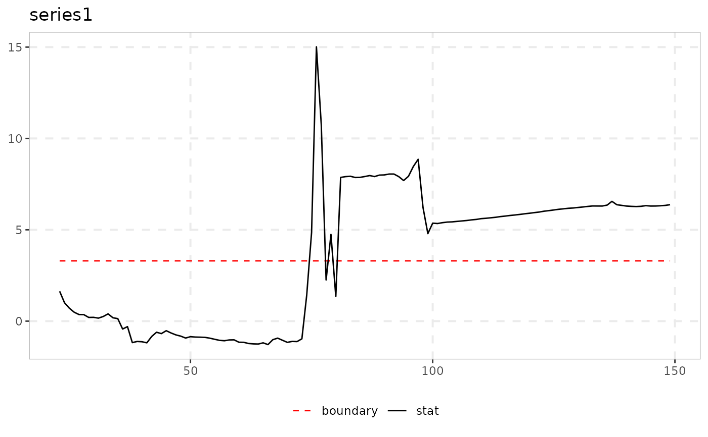

ssu_test implements the SSU and GSSU statistics of Kurozumi & Nishi
(2025). They are sup-type tests for a bubble that test for a stochastic, and not
deterministic, unit root in the squared first differences,
(Delta y_t)^2 = mu2 + omega*y_{t-1}^2 + eta_t. The statistic is
bias-corrected for the dependence on the correlation between the innovations of
this regression and those of the plain ADF regression.
Usage
ssu_test(
data,
minw = NULL,
sig_lvl = 95,
type = c("ssu", "gssu"),
union = FALSE,
cv = NULL
)Arguments
- data
A univariate or multivariate numeric time series object, a numeric vector or matrix, or a data.frame. A column may have leading or trailing
NAvalues, which describes an unbalanced panel in which series enter or exit the sample at different times. Those periods are filled withNAinbadfandbsadfand excluded from theadf,sadfandgsadfof that series. InteriorNAvalues (a gap in the middle of a series) are not supported. When any series is padded in this way, the panel statistics (bsadf_panelandgsadf_panel) are not available, and the function returnsNAfor them with a warning.- minw
Minimum window. The default is
psy_minwfor"ssu"and the value of the paper,floor(n * (-0.004 + 2.24/sqrt(n))), for"gssu". Table I is computed at these values.- sig_lvl
Significance level on the 0 to 100 scale used throughout the package, one of
90,95or99. Table I of Kurozumi & Nishi tabulates these levels.- type
"ssu"or"gssu".- union
Logical. Also run the union-of-rejections procedure with SADF (
"ssu") or GSADF ("gssu").- cv
Critical values for the SADF or GSADF side of the union, for example from
radf_mc_cvwithlag = 0. The default is the precomputed critical values, which are fetched on first use.
Value
An object of class ssu_test_obj: a list with the statistic path
(stat, one value for each candidate end point from minw to n.
For GSSU it is the sup over window starts at each end point), the constant
crit from Table I, sadf (the maximum, which is compared with
crit) and detected. With union = TRUE the list also contains
adf_stat (SADF or GSADF), union_stat, union_crit and
union_detected.
Details
This test generalizes the framework differently from the other
volatility-robustness tests in exuber. It does not touch the innovation variance
at all. It allows the explosive AR coefficient itself to vary stochastically over
time, 1 + c1/T + a*u_t/sqrt(T), where every recursive-ADF-family statistic
in this package assumes the deterministic coefficient 1 + c/T^alpha.
type = "ssu" is the single recursion, with the start fixed at the
beginning of the sample, which has the shape of SADF. type = "gssu"
also takes the supremum over window starts, which has the shape of GSADF,
with the minimum window r0 = -0.004 + 2.24/sqrt(n) from the paper. The
paper finds that GSSU is no more powerful than SSU.
union = TRUE adds the union-of-rejections procedure that the paper
recommends: UR = max(SADF / cv_sadf, SSU / cv_ssu) (or GUR with
GSADF and GSSU), compared with the published scaling constant ur
(gur). Neither SADF nor SSU dominates. SSU wins when the explosive
coefficient is stochastic, SADF wins when it is deterministic, and the union
stays close to the better of the two. The SADF or GSADF side is
radf with its default minimum window and lag = 0, compared
with cv (default: the precomputed critical values).
Note
The SSU and GSSU critical values and the union constants are published asymptotic values (Table I of Kurozumi & Nishi 2025), so no simulation is needed. The union constant is valid only at the level for which the statistic was built.
The function returns its own class and not radf_obj, so it does not work
with summary(), \link{datestamp} and tidy. It has its own print() and
autoplot() methods instead. print() shows the statistic and the critical value. See
vignette("naming-and-analysis", package = "exuber") for which functions fit
the shared pipeline and which do not.
![[Experimental]](figures/lifecycle-experimental.svg)
References
Kurozumi, E., & Nishi, M. (2025). Bubble testing with stochastically varying explosive coefficient. Journal of Time Series Analysis, 46(5), 945-965.
See also
radf for the recursive ADF-family alternative with a
deterministic coefficient, which this test complements.
Other volatility-robust tests:
cusum_test(),
radf_kp(),
radf_sbz(),
radf_sbz_union(),
radf_sign(),
radf_sign_dm(),
radf_tt()
Examples
# \donttest{
# A stochastically varying explosive root, rho_t = 1 + 3/n + 4 * u_t / sqrt(n).
# This is the alternative that ssu_test() is built for, and lbi_test() is built
# for a fixed root
y <- sim_psy1(n = 150, te = 75, tf = 150, c = 3, alpha = 1, seed = 2001,
coef_noise = rnorm(149), coef_a = 4)
res <- ssu_test(y, sig_lvl = 95)
print(res)
#>
#> ── ssu_test (SSU, n = 150, minw = 23, sig_lvl = 95%, crit = 3.3) ───────────────
#>
#> series sadf detected
#> series1 15.02 TRUE
#>
# The double-recursion version
ssu_test(y, type = "gssu")
#>
#> ── ssu_test (GSSU, n = 150, minw = 26, sig_lvl = 95%, crit = 5.37) ─────────────
#>
#> series sadf detected
#> series1 15.02 TRUE
#>
# Plot the recursive SSU statistic path against its critical value
autoplot(res)

# }